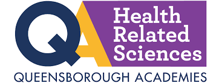
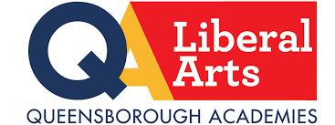
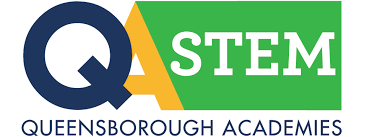
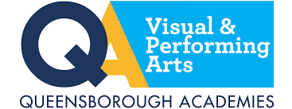

More than 16,000 students are enrolled in Associate degree or certificate programs and another 10,000 students attend continuing education programs at Queensborough Community College. Queensborough prepares students for an exciting new career or for transfer to a four-year program. In fact, more than half of Queensborough students transfer to a four-year CUNY institution after earning their Associate degrees.





Degree List
Queensborough offers transfer programs, including dual-joint degree programs, as well as career and certificate programs, and your choice of program automatically enrolls you in one of five Queensborough Academies.
QCC MAP
Building Directory:
- Administration Building
- C Building
- Humanities Building
- Kurt R. Schmeller Library Building
- Medical Arts Building
- Oakland Building
- Robert F. Kennedy Hall (Gymnasium)
- Science Building
- Service Building
- Student Union
- Technology Building
- W Building
- Y2 Building
- Z Building
- Q27 buses (local and limited) stop on campus from 7 a.m. – 11 p.m. on weekdays. On Saturday and Sunday, the Q27 stops at 56th Avenue and Springfield Blvd.
- Q30 buses marked "Queensborough" stop at the campus entrance on 56th Avenue from 7 a.m. – 7 p.m. on weekdays. On Saturday and Sunday, all Q30 buses stop at Horace Harding Expressway and Springfield Blvd.
- The Nassau Inter-County Express N20 and N21 buses stop just north of campus at Northern Boulevard/223rd Street.

To Learn More
The Mathematics Learning Center is a tutoring and self-study facility accessible to all students. Open year round providing assistance for all mathematics and computer science courses, from the developmental to the advanced level.
The Campus Writing Center (CWC) serves as a college-wide resource providing QCC students with FREE tutoring assistance for all English (EN) coursework, as well as any writing-related or WI assignment across the curriculum.
The Student Learning Center provides a welcoming environment for students and faculty for teaching and learning. Offering a variety of research and educational resources, including technology, as well as support services.